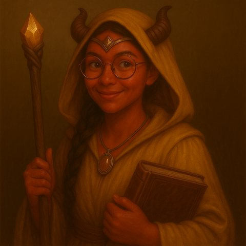

Kaelis, servante de la Source
📜 Ouvrir la fiche de personnage (Google Sheets)

- Type : PJ
- Race / classe : tieffeline, clerc
- Alignement : neutre
- Statut : actif
- Lieu actuel : château de Garches
-
Titres : comtesse du duché de Bromaël, copropriétaire des ruines de Garches et des Landes Grises
-
Description : taille moyenne-basse (1,55 m + 7 cm de cornes). Tenue de voyage élégante, médaillon, diadème.


Caractéristiques (fiche)
| Dextérité | Vitesse | Charisme | |
|---|---|---|---|
| Total | 12 | 8 | 26 |
| Seuil épique (d20) | 8 | 12 | 2 |
| Seuil légendaire | 15 | 19 | 9 |
| Seuil mythique | 22 | 26 | 16 |
Armes
- Bâton de pèlerine (d8), 2 scalpels de lancer (portée 10 m, d4)
Sorts
- Thaumaturgie (coût 1, 15 min)
- Soin : enlève d20 blessures (coût 2)
- Revoir les derniers instants à travers les yeux d'un mort (coût 1)
- Voir l'invisible dans tous les plans (coût 1, 60 min)
- Faire parler les morts
- Préservation des morts contre le pourrissement et la zombification (coût 1, 24 h)
- Sommeil : d20 + charisme <= 20 dans un cône de 20 m (coût 3)
- Influencer les démons (coût 1)
Objets importants
- Guide du routard interroyaumique, journal de voyage
- 9 sous d'or, 23 florins de Ressine, 10 rombelles d'Esos ; placement de 500 SO chez Skirfir Rognellard
Background
- Origine : au-delà de Ressine, loin à l'Est. Grande cité commerçante d'Esos (épices, manuscrits, textiles).
- Orpheline, élevée dans un couvent. Servante de la Source. Assistante de l'embaumeuse.
- Rat de bibliothèque en crise existentielle : veut voir le monde.
- Objectif : comprendre les traditions funéraires du Vieux Royaume.
Ce qu'on sait (résumé des sessions)
- Aide les héros à retrouver l'archonte Cloaphilès.
- Le Voïvode Brancovan est tombé amoureux d'elle (influence divine, sans retour).
- Donne les rites funéraires à l'armée des morts.
- Soigne la petite fille (Kila), arrête la décomposition du corps de l'Innommable.
- Fiche : « a mis en déroute l'armée des Ouromans réunie par le Voïvode ».